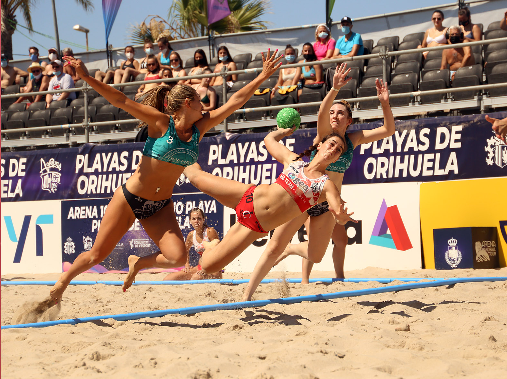
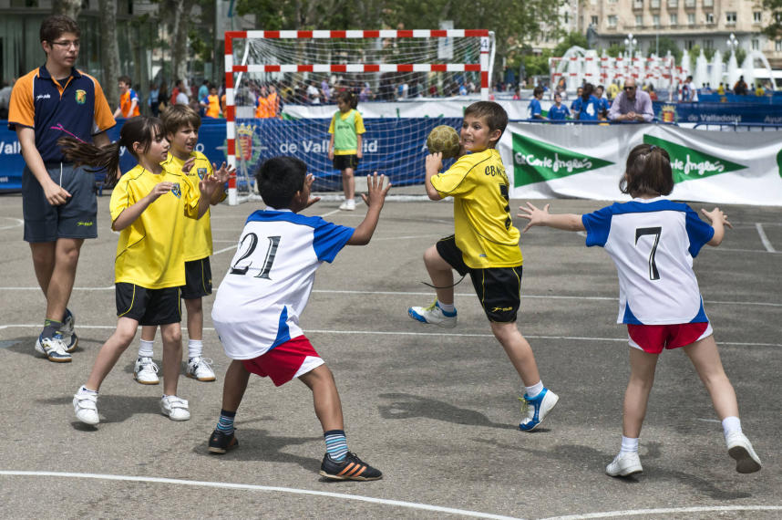

Balonmano playa
El balonmano playa contiene grandes similitudes con el balonmano tradicional. Participan dos equipos de cuatro jugadores cada uno, siendo uno de ellos el portero. Se juega en un campo de unos 27 por 12 metros, el cual está cubierto íntegramente por arena. Cada partido consta de dos tiempos de 10 minutos cada uno, y el resultado es contabilizado independientemente, si se logra ganar los dos tiempos, se logra un 2-0, pero, en caso de que cada equipo ganase un periodo, el partido se decide con el sistema de "un jugador contra el portero". Los golpes francos deben sacarse justamente en el lugar donde se cometieron, teniendo que estar los jugadores a 1 m del lanzador. Si un jugador es excluido, este no podrá volver a entrar hasta que su equipo haya recuperado la posesión del balón, en caso de descalificación, este jugador no podrá volver a entrar y será reemplazado por otro cuando su equipo vuelva a recuperar la posesión. Para los cambios, los jugadores de ambos equipos se situarán en el exterior de la misma línea de banda, cada uno en la parte correspondiente a su campo, permaneciendo sentados y podrán cambiarse tantas veces como quieran.
La competición más importante en la actualidad es el Mundial de Balonmano Playa, que se disputa bajo el mandato de la IHF (Federación Internacional de Balonmano).

Minibalonmano
El minibalonmano se juega entre dos equipos de cinco jugadores cada uno, siendo uno de ellos el portero, aunque este debe ser sustituido en cada periodo. Además, al ser este un juego dirigido para niños, todos ellos deben participar en algunos de los cuatro tiempos. Se juegan cuatro tiempos de 10 minutos cada uno, teniendo 6 minutos de descanso entre tiempos y 2 minutos entre periodos (2 tiempos = 1 periodo).
Cada encuentro se juega sobre una superficie de material sólido de unos 20 por 13 metros, además de ser reducidas otras distancias del área. La portería debe ser rebajada a 1,6 m en caso de ser benjamín, o a 1,8 m si es alevín. Desde línea de meta hasta el área hay 5 m, y el punto de penalti se hallará a 6 m.
El balón utilizado por los niños depende de la categoría de estos: 44 centímetros) de diámetro para benjamines, y 48cm para alevines. En la defensa no podrán ser utilizadas las mixtas (defensas independientes a un jugador), y no podrá ser utilizada ninguna sustancia en la sujeción del balón. El resultado final solo podrá oscilar entre 0-0, 0-1, 1-0, 1-1, 2-0 y 0-2; ya que cada periodo es independiente y se le da un punto al equipo ganador.
Este tipo de deporte no tiene representaciones internacionales, ya que es practicado solo para la enseñanza del balonmano común entre los niños varones y niñas de los distintos clubes.
